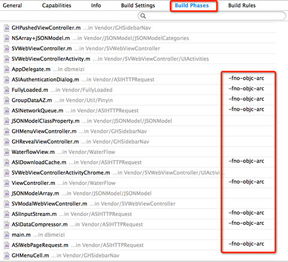

话说二月十四，恰逢19年一遇的元宵情人节同一天，博主早早下班回家，吃完饭坐在沙发上刷豆瓣，看到友邻发一条豆瓣说，点进去一看，好家伙，原来是个福利贴，是某程序员写爬虫收集豆瓣上面的姑娘晒出来的图片的网站，图片很真实，豆瓣妹纸果然很给力。网站对手机的适配还不错，于是博主又尝试到AppStore搜一下是否有对应的app，可惜，没有! 于是，博主就闪出一个念头，长夜漫漫，不如就给它做个iOS客户端吧。
好家伙，说干就干！拿出Macbook，打开Xcode，且慢，难道从零开始写？
感谢上帝，这是一个开源的时代，我们站在巨人的肩膀上，写程序就像是在搭积木，别人已经做好了积木，觉得好用我们拿来拼搭就是了。目前互联网最有名的开源社区当属Github莫属了，本博客其实也是借助Github Pages再加上Pelican静态网站工具搭建的。那么，搭建一个显示图片的iOS客户端需要哪些模块呢？用过“花瓣”这个应用的知道，其图片展示方式是瀑布流的网格方式，支持下拉刷新上拉加载更多，使用抽屉式的导航方式，异步加载图片等等。
知道我们需要用到什么东西了，那么我们自然可以去Github上找其开源实现啦，典型的拿来主义啊！
首先，我们得确定app所要支持的iOS最低版本，据统计，iPhone iOS6以上版本所占的比例已高达98%，因此这里选用iOS6 SDK，Xcode版本是最新的Xcode5，默认支持ARC，关于ARC的知识，可以点击这里查看其使用。
接下来就可以列出图片瀑布app要用到的Github开源实现了：
* GHSidebarNav: 实现抽屉式导航栏，支持ARC
* WaterflowView: 使用iOS6新加入的强大的UICollectionView实现瀑布流
* ASIHTTPRequest: 强大的HTTP请求第三方类库，已在WaterflowView中集成。缺点是不支持ARC，已停止更新，建议使用AFNetworking替代。
* LoadingMoreFooterView: 实现上拉加载更多，已在WaterflowView中集成
* MBProgressHUD: 实现正在加载的提示框
* JSONModel: 强大的JSON映射库，实现json字段和类属性的自动映射。
* SVWebViewController: 实现一个简单的内置网页浏览器，支持网页浏览的前进后退，还添加了分享功能。
万事具备，接下来就是打开Xcode，引入上述的模块，就可以开始搭积木啦，下图是我的工程目录结构：
因为ASIHTTPRequest库不支持ARC，所以我们还需要在Xcode的BuildPhases中将其相关类文件的Compiler Flag设置为-fno-objc-arc

接下来我们就可以来实现app的实现抽屉式导航栏，iOS创建窗口和根视图控制器是在appDeletage的didFinishLaunchingWithOptions方法中，按照GHSidebarNav的demo，引入其头文件并添加代码如下：
- (BOOL)application:(UIApplication *)application didFinishLaunchingWithOptions:(NSDictionary *)launchOptions
{
UIColor *bgColor = [UIColor colorWithRed:(50.0f/255.0f) green:(57.0f/255.0f) blue:(74.0f/255.0f) alpha:1.0f];
self.revealController = [[GHRevealViewController alloc] initWithNibName:nil bundle:nil];
self.revealController.view.backgroundColor = bgColor;
RevealBlock revealBlock = ^(){
[self.revealController toggleSidebar:!self.revealController.sidebarShowing
duration:kGHRevealSidebarDefaultAnimationDuration];
};
NSArray *headers = @[[NSNull null], @"豆瓣妹子"];
NSArray *controllers = @[
@[
[[UINavigationController alloc] initWithRootViewController:[[DBMeiziViewController alloc] initWithTitle:@"首页" withRevealBlock:revealBlock]]
],
@[
[[UINavigationController alloc] initWithRootViewController:[[DBMeiziViewController alloc] initWithTitle:@"性感" withCategory:sexyCategory withRevealBlock:revealBlock]],
[[UINavigationController alloc] initWithRootViewController:[[DBMeiziViewController alloc] initWithTitle:@"有沟" withCategory:cleavageCategory withRevealBlock:revealBlock]],
[[UINavigationController alloc] initWithRootViewController:[[DBMeiziViewController alloc] initWithTitle:@"美腿" withCategory:prettyLegsCategory withRevealBlock:revealBlock]],
[[UINavigationController alloc] initWithRootViewController:[[DBMeiziViewController alloc] initWithTitle:@"小清新" withCategory:cuteCategory withRevealBlock:revealBlock]],
[[UINavigationController alloc] initWithRootViewController:[[DBMeiziViewController alloc] initWithTitle:@"文艺范" withCategory:artisticCategory withRevealBlock:revealBlock]],
[[UINavigationController alloc] initWithRootViewController:[[DBMeiziViewController alloc] initWithTitle:@"今日妹子" withCategory:[self getNewCategory] withRevealBlock:revealBlock]],
]
];
NSArray *cellInfos = @[
@[
@{kSidebarCellImageKey: [UIImage imageNamed:@"user.png"], kSidebarCellTextKey: NSLocalizedString(@"首页", @"")}
],
@[
@{kSidebarCellImageKey: [UIImage imageNamed:@"user.png"], kSidebarCellTextKey: NSLocalizedString(@"性感", @"")},
@{kSidebarCellImageKey: [UIImage imageNamed:@"user.png"], kSidebarCellTextKey: NSLocalizedString(@"有沟", @"")},
@{kSidebarCellImageKey: [UIImage imageNamed:@"user.png"], kSidebarCellTextKey: NSLocalizedString(@"美腿", @"")},
@{kSidebarCellImageKey: [UIImage imageNamed:@"user.png"], kSidebarCellTextKey: NSLocalizedString(@"清新", @"")},
@{kSidebarCellImageKey: [UIImage imageNamed:@"user.png"], kSidebarCellTextKey: NSLocalizedString(@"文艺范", @"")},
@{kSidebarCellImageKey: [UIImage imageNamed:@"user.png"], kSidebarCellTextKey: NSLocalizedString(@"今日妹子", @"")}
]
];
// Add drag feature to each root navigation controller
[controllers enumerateObjectsUsingBlock:^(id obj, NSUInteger idx, BOOL *stop){
[((NSArray *)obj) enumerateObjectsUsingBlock:^(id obj2, NSUInteger idx2, BOOL *stop2){
UIPanGestureRecognizer *panGesture = [[UIPanGestureRecognizer alloc] initWithTarget:self.revealController
action:@selector(dragContentView:)];
panGesture.cancelsTouchesInView = YES;
[((UINavigationController *)obj2).view addGestureRecognizer:panGesture];
}];
}];
self.menuController = [[GHMenuViewController alloc] initWithSidebarViewController:self.revealController
withSearchBar:nil
withHeaders:headers
withControllers:controllers
withCellInfos:cellInfos];
self.window = [[UIWindow alloc] initWithFrame:[UIScreen mainScreen].bounds];
self.window.rootViewController = self.revealController;
[self.window makeKeyAndVisible];
return YES;
}
其中的DBMeiziViewController就是接下来要讲的瀑布流视图控制器了。WaterflowView实现了一个WaterflowCollectionViewController，这里只需让瀑布流视图控制器DBMeiziViewController继承这个类，并在其init方法中设置WaterFlowLayout布局即可，代码片段如下：
@implementation DBMeiziViewController{
@private
RevealBlock _revealBlock;
}
#pragma mark Memory Management
- (id)initWithTitle:(NSString *)title withRevealBlock:(RevealBlock)revealBlock {
WaterFlowLayout *layout = [[WaterFlowLayout alloc] init];
if (self = [super initWithCollectionViewLayout:layout]) {
self.title = title;
_revealBlock = [revealBlock copy];
[[UINavigationBar appearance] setTintColor:[UIColor blackColor]];
self.navigationItem.leftBarButtonItem =
[[UIBarButtonItem alloc] initWithBarButtonSystemItem:UIBarButtonSystemItemAction
target:self
action:@selector(revealSidebar)];
self.collectionView.backgroundColor = [UIColor colorWithRed:(237.0f/255.0f) green:(244.0f/255.0f) blue:(237.0f/255.0f) alpha:1.0f];
self.loadFooterView = [[LoadingMoreFooterView alloc]initWithFrame:CGRectMake(0, self.collectionView.frame.size.height, self.view.frame.size.width, 44.f)];
self.loadingmore = NO;
[self.collectionView addSubview:self.loadFooterView];
}
return self;
}
- (id)initWithTitle:(NSString *)title withCategory:(NSUInteger)category withRevealBlock:(RevealBlock)revealBlock {
self = [self initWithTitle:title withRevealBlock:revealBlock];
self.category = category;
return self;
}
现在，我们可以运行app，在模拟器中即可看到下图所示：
慢着，博主不是承诺要显示豆瓣妹纸的图片吗？怎么出来的是几只萌猫呢？这是因为我们还没有实现网络请求获取图片数据。所以，下面就来讲讲如何实现网络请求。 首先，我们需要在app中实现图片数据模型，通过对网站数据的分析，我们的数据模型需要以下这些属性，这里我们的model类继承自JSONModel类，以获得其自动和JSON数据的映射的功能，代码如下：
#import <Foundation/Foundation.h>
#import "JSONModel.h"
@interface DBMeizi : JSONModel
@property (strong, nonatomic) NSString *_id;
@property (strong, nonatomic) NSString *category;
@property (strong, nonatomic) NSString *img;
@property (strong, nonatomic) NSString *bigImg;
@property (strong, nonatomic) NSString *people;
@property (strong, nonatomic) NSString *topic;
@property (strong, nonatomic) NSString *name;
@end
@implementation DBMeizi
// Map automatically under_score case to camelCase
+ (JSONKeyMapper*)keyMapper
{
return [JSONKeyMapper mapperFromUnderscoreCaseToCamelCase];
}
@end
接下来还需要一个service类来实现发送网络请求，这里我们用到了Grand Central Dispatch 多线程来实现异步网络请求，代码如下图。其主要思路就是通过向服务器发送url请求获取json数据，并自动映射到数据模型的属性上。
@implementation DBMeiziService
+ (DBMeiziService*)sharedService {
static DBMeiziService *_sharedInstance = nil;
static dispatch_once_t onceToken;
dispatch_once(&onceToken, ^{
_sharedInstance = [[DBMeiziService alloc] init];
});
return _sharedInstance;
}
- (void)dbMeiziWithCategory:(NSUInteger)category start:(NSUInteger)start count:(NSUInteger)count handler:(CompletionBlock)handler {
[HUD showUIBlockingIndicatorWithText:@"Fetching JSON"];
dispatch_async(dispatch_get_global_queue(DISPATCH_QUEUE_PRIORITY_DEFAULT, 0), ^{
NSDictionary *params = @{@"category": @(category), @"start": @(start), @"count": @(count)};
NSString *url = [NSString addQueryStringToUrlString:kServerAddr withDictionary:params];
PPDebug(@"Fetching data from: %@", url);
NSData *data = [NSData dataWithContentsOfURL:[NSURL URLWithString:url]];
NSArray *json = nil;
NSArray *items = nil;
if (data) {
json = [NSJSONSerialization JSONObjectWithData:data options:kNilOptions error:nil];
items = [DBMeizi arrayOfModelsFromDictionaries:json];
PPDebug(@"Result count: %d", [items count]);
}
dispatch_async(dispatch_get_main_queue(), ^{
[HUD hideUIBlockingIndicator];
if (handler != NULL) {
handler(items);
}
});
});
}
@end
定义好了数据模型和网络请求方法，接下来就可以在视图控制器类中调用了，代码如下图所示。其思路就是将通过网络请求获得的数据赋值给视图控制器的数据模型，让UICollectionViewController的delegate方法显示图片和文字。
- (void)viewDidAppear:(BOOL)animated
{
[[DBMeiziService sharedService] dbMeiziWithCategory:self.category start:0 count:fetchSize handler:^(NSArray *dataList){
self.dataList = [NSMutableArray arrayWithArray:dataList];
PPDebug(@"dataList count %d", [self.dataList count]);
NSMutableArray *imageList = [[NSMutableArray alloc] init];
NSMutableArray *nameList = [[NSMutableArray alloc] init];
for (DBMeizi *meizi in dataList) {
[imageList addObject:meizi.img];
[nameList addObject:meizi.name];
}
self.imageUrls = [NSMutableArray arrayWithArray:imageList];
self.names = [NSMutableArray arrayWithArray:nameList];
[self refresh:nil];
}];
}
#pragma mark - UICollectionViewDelegate methods
- (void) collectionView:(UICollectionView *)collectionView didSelectItemAtIndexPath:(NSIndexPath *)indexPath
{
DBMeizi *meizi = [self.dataList objectAtIndex:indexPath.row];
SVWebViewController *webViewController = [[SVWebViewController alloc] initWithAddress: meizi.topic];
[self.navigationController pushViewController:webViewController animated:YES];
}
完成上面的步骤后，重新run一下程序，自然会看到期待已久的豆瓣妹纸啦。
最后，附上以上程序的源码：https://github.com/Kaibin/dbmeizi